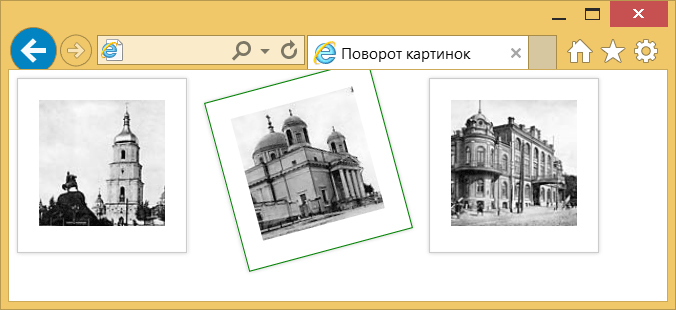

Переходы
Переходом называется плавная смена свойств элемента при наведении на него курсора мыши. При использовании псевдокласса :hover изменение происходит мгновенно, transition же позволяет задать продолжительность и метод перехода.
Рассмотрим для начала простой пример. У нас имеется несколько картинок, каждая из них должна поворачиваться на небольшой угол при наведении на неё курсора (пример 1).
Пример 1. Применение transition
<!DOCTYPE html>
<html>
<head>
<meta charset="utf-8">
<title>Поворот картинок</title>
<style>
.thumb {
display: inline-block;
border: 1px solid #ccc; /* Параметры рамки */
padding: 20px; /* Поля вокруг картинки */
margin-right: 30px; /* Отступ справа */
box-shadow: 0 0 5px #ccc; /* Добавляем тень */
transition: 0.6s ease-out; /* Переход */
}
.thumb:hover {
transform: rotate(-15deg); /* Поворачиваем картинку */
border: 1px solid green; /* Меняем цвет рамки */
}
</style>
</head>
<body>
<div class="thumb"><img src="images/thumb1.jpg" alt=""></div>
<div class="thumb"><img src="images/thumb2.jpg" alt=""></div>
<div class="thumb"><img src="images/thumb3.jpg" alt=""></div>
</body>
</html>Как только мы наводим курсор на любую картинку, она плавно поворачивается на 15 градусов влево (рис. 1).

Рис. 1. Плавный поворот изображения
В стилях для :hover мы устанавливаем желаемые изменения элементов при наведении курсора. Сам переход добавляется в стилях элемента через свойство transition. У него четыре параметра — одно или несколько свойств, продолжительность анимации, функция времени и задержка времени перед анимацией.
Свойства
По умолчанию анимируются все свойства указанные внутри :hover. Иногда часть свойств должна анимироваться, а часть нет. В этом случае все желаемые свойства следует перечислить через запятую в transition.
transition: transform, border 1s;Продолжительность анимации
Это время, в течение которого будет длиться движение. Задаётся как в секундах (1s, 0.5s), так и в миллисекундах (100ms).
Задержка анимации
Движение не обязательно должно начинаться немедленно, допустимо добавить в начале небольшую задержку, после завершения заданного времени сразу же начнётся анимация.
Функция времени
Анимация может происходить по разному. Например, медленно начинаться в начале движения и ускоряться в конце или наоборот. Вариантов множество и они создают всевозможные интересные эффекты. Скорость анимации управляется специальной функцией связывающей время и движение. Вот как она выглядит на графике (рис. 2).

Рис. 2. Вид функции времени
Начальная точка имеет координаты 0.0, 0.0, конечная — 1.0, 1.0, при этом функция по оси ординат может превышать эти значения в большую или меньшую сторону. В итоге это будет выглядеть, словно элемент сперва движется в обратную сторону, а потом уже в нужную. Так можно создать эффект отскакивания или инерции. Вот наиболее популярные значения функции времени.
- ease — анимация начинается медленно, затем ускоряется и к концу движения опять замедляется.
- ease-in — анимация медленно начинается, к концу ускоряется.
- ease-out — анимация начинается быстро, к концу замедляется.
- ease-in-out — анимация начинается и заканчивается медленно.
- linear — одинаковая скорость от начала и до конца.
В примере 2 переход применяется для плавного выдвижения панели из-за левого края экрана при наведении на неё курсора мыши.
Пример 2. Использование функции времени
<!DOCTYPE html>
<html>
<head>
<meta charset="utf-8">
<title>Обратная связь</title>
<style>
.feedback {
border-radius: 0 10px 10px 0; /* Скругляем уголки */
width: 300px; /* Ширина */
background: #333; /* Цвет фона */
color: #fff; /* Цвет текста */
position: fixed; /* Фиксируем на одном месте */
min-height: 100px; /* Минимальная высота */
top: 100px; left: -320px; /* Положение */
border-right: 20px solid #fc0; /* Оранжевая граница справа */
padding: 10px; /* Поля вокруг */
transition: left 1s ease-out; /* Анимация */
}
.feedback img {
float: left;
margin: 0 10px 0 0;
}
.feedback::after {
content: 'Обратная связь'; /* Выводим текст */
color: #000; /* Цвет надписи */
position: absolute; /* Абсолютное позиционирование */
right: -60px; bottom: 50px; /* Положение текста */
transform: rotate(-90deg); /* Поворачиваем текст */
}
.feedback:hover {
left: 0; /* При наведении сдвигаем вправо */
}
</style>
</head>
<body>
<div class="feedback">
<img src="images/feedback.jpg" alt="" width="100" height="100">
Если у вас возникли вопросы по этому коду, звоните мне по телефону:
555-3298.
</div>
</body>
</html>В данном примере много стилевых свойств, но они предназначены лишь для создания нужного дизайна. Анимация при наведении курсора мыши делается двумя свойствами — transition задаёт параметры анимации, а left — это свойство, значение которого плавно изменяется со временем (в данном случае в течение одной секунды). Исходно left равно -320px и большая часть панели скрыто за левым краем браузера, виден лишь кусочек. Затем left становится равным нулю и таким образом вся панель становится видна.
В стилях допускается добавлять сразу несколько transition одновременно с разными свойствами и эффектами, это позволяет разнообразить переходы. В примере 3 показано создание кнопки, у которой плавно изменяется цвет фона, границы и надписи. При этом анимация текста отличается от анимации других частей.
Пример 3. Кнопка с плавным изменением цвета
<!DOCTYPE html>
<html>
<head>
<meta charset="utf-8">
<title>Кнопка</title>
<style>
button {
background-color: #828c95;
color: #fff;
font-size: 1.5em;
padding: 10px 40px;
border-radius: 20px;
border: 2px solid #b5bdc8;
transition: background-color, border 1s ease-in, color 2s ease-out;
}
button:hover {
background-color: #fac695;
color: #333;
border: 2px solid #ff670f;
}
</style>
</head>
<body>
<button>Нажми на меня</button>
</body>
</html>Если вам требуется задействовать несколько transition с разными значениями, то их нельзя просто перечислить друг за другом. Нижнее свойство всегда будет переопределять верхние. Так что мы пишем один transition, а через запятую перечисляем необходимые нам параметры.
См. также

Все материалы сайта доступны по лицензии Creative Commons «Attribution-NonCommercial» («Атрибуция — Некоммерческое использование») 4.0 Всемирная, если не указано иное.